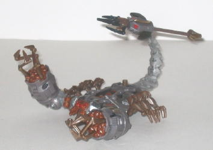
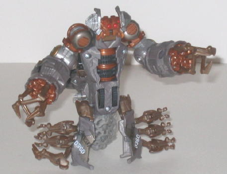
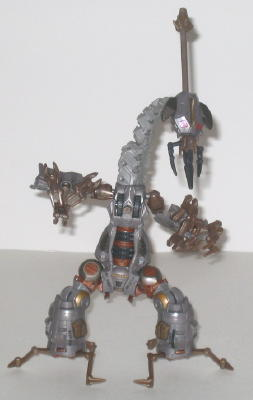
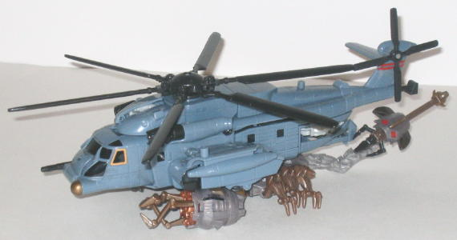

Scorponok
(Deluxe) [Movie]
Scorponok
(Deluxe) [Movie]
Allegiance
: Decepticon
Size
: Deluxe
Difficulty of Transformation
: Very
Easy
Color Scheme
: Milky slightly purplish
gray, brownish bronze, and some light milky gray, silver, light red, charcoal
black, light brown, metallic gunmetal gray, and dull metallic gold
Rating
: 6.9


Scorponok's robotic
scorpion mode is freaking amazing, to put it simply. He's very close to
what he looks like in the movie, with great proportions. His legs are a
bit undersized, but that's his only problem in that respect and it's not
that bad. His paint apps are great-- the miniature "CAUTION" and "FUEL"
signs, the silver, gold, and gunmetal paint apps all over him-- it all
looks really nice. And his mold detailing isn't anything to scoff at, either--
he definitely looks like a killing machine, with his pointy twisted claws,
his drills behind said claws, his VERY highly-detailed face, the "drill"
that makes up the core of his body, the armor plating-- heck, it all looks
good. The color scheme is realistic and "metal-colored" like many of other
movie Decepticons, but this particular combination of grey, black, and
brown goes really great together and is rather eye-catching. His articulation
is also pretty good for a scorpion, too-- he can move at the shoulders
(at three points), the elbows, at the base of each claw, at the base of
each leg, at the tail at five separate places, and his head can move up-and-down
slightly, which makes for a surprisingly varied number of poses he can
assume in this mode. Scorponok also features two gimmicks in this mode
(and in his robot mode, too). The first one is that if you press on the
trigger on the top of his tail, the stinger will launcher forward about
an inch, to "skewer" anyone in front of him. The other, far more impressive,
gimmick pretty much involves the rest of his body-- as you roll Scorponok
along on a flat surface, his claws rotate as well as the drill that makes
up the core of his main body. This automatic movement can work either way,
too-- rotate the drill to rotate the claws, or visa versa. It's impressive
how this works even with articulation in the shoulders and elbows, and
emphasizes Scorponok's "sand shark" digging aspect very well. In addition,
Scorponok can latch on to
Voyager-class Blackout
in Blackout's vehicle mode and, when Blackout's rotor button is pushed
in, Scorponok's claws will spin in unison. The two toys are definitely
out-of-scale with each other, though, and it admittedly looks rather goofy
with Scorponok squashed under Blackout like that.
Scorponok's "robot mode",
however, is a piece of sad sack. It's literally just his scorpion mode
standing up, and was clearly less than an afterthought. The sides of his
main body become short, odd-looking legs, but other than that he's the
exact same. His tail can't swing up over his main body, his scorpion head
looks really odd mounted in a normal humanoid position, and the scorpion
legs hanging off the sides of his robot legs look really bad. His legs
can move at the hips (at two places) and at the knees, otherwise his articulation
is the same in this mode. A much better "fan mode" robot mode is easily
doable, though, and I've included a picture of it because I think it's
a much better option than the official robot mode-- it looks very alien
like you'd expect from a creature like Scorponok, but it looks a LOT less
like his scorpion mode standing up. Basically, you tilt his head to the
rear position, straighten out his scorpion arms and extend out the claws
to form the robot legs, unfold the official robot mode leg pieces and position
the scorpion legs around them as seen above to look like claws (and thus
form his "fan mode" robot arms), and then his scorpion tail becomes his
head. I think it looks pretty cool, and to me it's what Scorponok's "real"
robot mode is, none of this afterthought nonsense.


Scorponok's scorpion
mode is simply incredible, and has some great detailing, proportions, and
gimmicks. His robot mode is very bad, however, as it's clearly just his
scorpion mode standing up and nothing else. If you can look past his horrible
robot mode, or prefer to use my described "fan robot mode" instead, by
all means get him-- but if you a good official robot mode is that important
to you, then definitely pass on this one.
Review by Beastbot